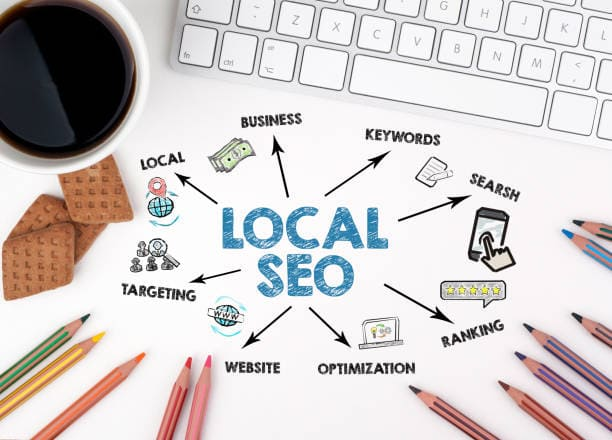

20+ Years of Combined SEO Experience 
We review goals, priority services, analytics, search visibility, competitors, technical access and content quality. The result is a baseline and a short list of problems worth solving first.
We group queries by intent, relevance and journey stage, then assign each useful topic to a page. This reduces cannibalisation and prevents one page from trying to rank for every service.
Work may include crawl and indexation fixes, page restructuring, internal links, content improvements, local signals and new expert resources. Each action has a reason and an intended outcome.
Reporting connects completed work with organic landing pages, qualified enquiries, non-brand visibility, technical health and the next priorities. Rankings are context, not the only success metric.
QUALIFIED ORGANIC ENQUIRIES
NON-BRAND SEARCH VISIBILITY
LANDING-PAGE CONVERSIONS
TECHNICAL & INDEXATION HEALTH
Effective SEO connects technically accessible pages with the questions, comparisons and services potential customers actually search for. Our Delhi team studies the website, market, search demand and conversion journey, then prioritises work that can improve qualified organic discovery over time. We do not treat rankings as a one-off task or promise a position no agency controls.
The scope depends on the starting point. It can include a technical and content audit, keyword and competitor research, search-intent mapping, on-page improvements, internal linking, local SEO, content planning, structured-data checks and performance monitoring. Reporting explains completed work, visibility trends and next priorities so your team understands what is changing and why.
Search engines cannot value pages they cannot reliably discover, render or understand. We review crawl paths, status codes, canonicals, redirects, duplicate URLs, XML sitemaps, robots directives, JavaScript rendering, structured data and performance issues according to the needs of the site. For a deeper diagnosis, see our technical SEO services and SEO audit services.
Keyword research is useful only when it leads to a better information architecture. We decide which page should answer each important need, where a new page is justified and where competing pages should be consolidated. Content is written for a real reader first: clear answer, relevant evidence, useful detail and a natural next step. There is no preferred keyword density or magic word count.
Descriptive internal links help visitors and search systems move between related services, proof and supporting guidance. We connect pages where the relationship is genuinely useful, while avoiding repetitive exact-match anchors and sitewide keyword blocks.
AI Overviews, conversational search and answer engines change how people explore a topic, but they do not
replace the foundations of search quality. Accessible pages, unique first-hand information, clear structure,
trustworthy evidence and a strong page experience remain the durable work. We do not sell an invented “GEO
hack”, special AI keyword density or unnecessary llms.txt files as a ranking shortcut.
Where a business has genuine expertise, we help make it visible through named authors or reviewers, clear service ownership, original examples, transparent claims, well-labelled media and concise answers that sit inside a complete page—not disconnected snippets written only for machines.
| Phase | Focus | Typical outputs |
|---|---|---|
| Weeks 1–3 | Diagnosis and priorities | Baseline, tracking checks, crawl review, intent map, competitor and content gaps, implementation plan. |
| Weeks 3–8 | High-impact implementation | Critical technical fixes, key landing-page improvements, internal links, local foundations and content briefs. |
| Weeks 8–12 | Expansion and learning | Supporting content, quality checks, early performance analysis and a revised roadmap based on evidence. |
The exact order changes when a website has a migration risk, serious indexation problem, seasonal deadline or limited implementation resources. SEO is most effective when the roadmap reflects the real constraint.
We support local and wider-market campaigns for professional services, healthcare, education, real estate, ecommerce, manufacturing, hospitality and other competitive sectors. Businesses targeting Delhi NCR need genuine service-area relevance, consistent business information, a useful Google Business Profile and strong service pages—not dozens of thin locality copies.
Explore our specialist local SEO, franchise SEO audits and enterprise SEO audits. If the website experience itself is limiting enquiries, our website design team can collaborate with the SEO roadmap without mixing the two page topics.
Timelines depend on the website, competition, demand, content and authority. Technical fixes can be implemented quickly, while durable organic growth usually requires consistent work and measurement over several months.
No responsible SEO provider can control or guarantee a specific organic position. We use search-engine-compliant methods, set measurable priorities and report progress transparently.
The scope may include technical and content audits, search-intent research, on-page improvements, internal linking, local SEO, content planning, structured-data checks and performance measurement.
Yes. Local SEO can strengthen genuine location relevance through service content, technical consistency, local landing pages and Google Business Profile guidance.
The foundations remain the same: accessible pages, useful original information, clear structure, trustworthy evidence and strong page experience. There is no separate shortcut or special AI-search markup that replaces good SEO.
We consider business relevance, search intent, demand, competition, current visibility and the page best suited to answer the query. The goal is qualified discovery, not repetition.
A useful report connects completed work with technical health, organic landing-page performance, search visibility, conversions and the priorities planned next.
Yes. We can work with your developers, writers and internal stakeholders, providing priorities, briefs, quality checks and implementation support according to the agreed scope.

Local SEO connects service pages, genuine location relevance, consistent business information and Google Business Profile guidance. We focus on the areas you actually serve and avoid thin city pages that repeat the same claim.
Read MoreTechnical SEO examines crawlability, indexation, canonical signals, redirects, rendering, structured data, internal architecture and performance. Findings are prioritised by impact and implementation effort.
Read MoreFranchise SEO balances central brand governance with useful local information. We plan scalable page templates, location data, ownership, quality checks and measurement without turning every outlet page into a duplicate.
Read MoreEnterprise SEO turns complex technical and content findings into governed workstreams. We help teams prioritise templates, high-value sections, migrations, automation risks and reporting across large digital estates.
Read More
An SEO audit reviews technical access, page roles, content quality, internal links, search demand and measurement. The deliverable explains what matters, why it matters and what should happen first.
Read MoreA franchise audit looks at shared templates, local uniqueness, business data, internal linking, indexation and governance. It distinguishes network-wide fixes from location-specific opportunities.
Read MoreAn enterprise audit samples templates and sections, tests technical patterns, reviews governance and sizes opportunities. Recommendations are grouped by owners, dependencies and likely impact.
Read More